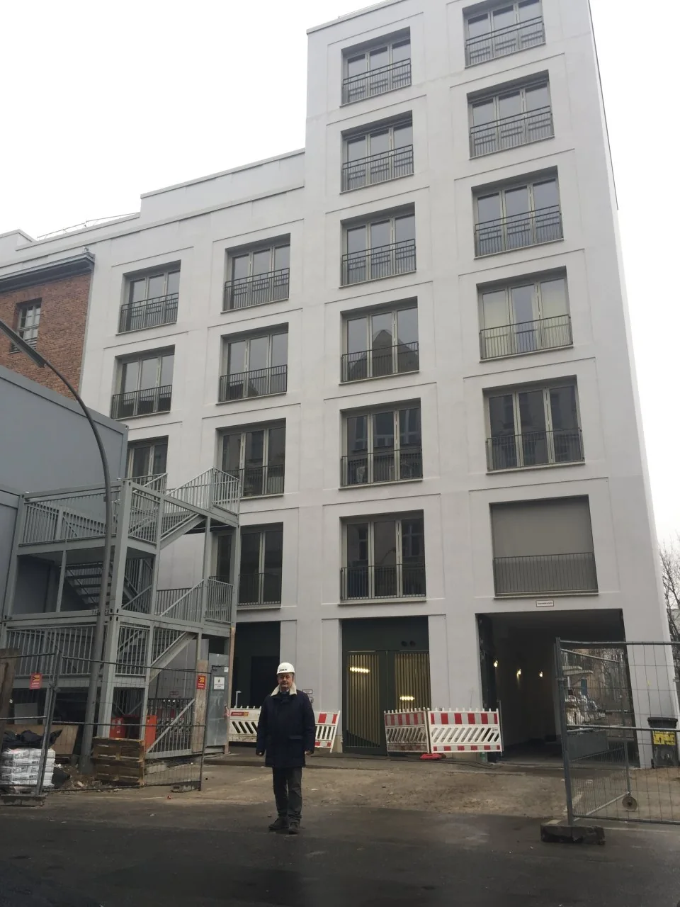

Bauleitung und Qualitätskontrolle
Fachunternehmen, Termine und Qualität koordinieren und die Ausführung im vereinbarten Umfang fachlich kontrollieren.
Technische Expertise · Berlin · Teltow · Brandenburg
Schäden erkennen, Werte beurteilen, Bauvorhaben planen und die Ausführung fachlich begleiten.
Wir prüfen, planen, koordinieren und überwachen. Die Bauausführung erfolgt durch beauftragte Fachunternehmen.

Der Einstieg folgt Ihrer konkreten Situation
Wählen Sie die Frage, die Ihrem Fall am nächsten kommt. Darunter sehen Sie die passende technische Leistung.
Nach Geschäftswert und realen Kundenfragen geordnet
Fachunternehmen, Termine und Qualität koordinieren und die Ausführung im vereinbarten Umfang fachlich kontrollieren.
Technische Untersuchung von Schäden, Mängeln und Ursachen mit nachvollziehbarer Dokumentation.
Markt- und Wertermittlung für Immobilien und Grundstücke – getrennt von der technischen Zustandsprüfung.
Zustand, erkennbare Risiken und zu erwartende Investitionen vor dem Immobilienkauf einordnen.
Planungs- und Genehmigungsunterlagen für Neubau, Umbau, Sanierung und Modernisierung.
Leistungsumfang strukturieren, Angebote vergleichen, Fachunternehmen auswählen und die Ausführung bis zur Abnahme begleiten.
Erfahrung wird nachvollziehbar, wenn Rolle und Ergebnis sichtbar sind.
Die Arbeitsfassung zeigt, wie bestehende Referenzen von einer Bildergalerie zu belastbaren Fallbeispielen weiterentwickelt werden können.
Wohnanlage · Bestand
So kann ein späterer Fall die Ausgangslage, die fachliche Aufgabe und den Nutzen für den Auftraggeber verständlich zeigen.
Das Bild stammt aus dem bestehenden öffentlichen Projektarchiv und dient im Arbeitskonzept nur als Platzhalter. Nutzung und Zuordnung werden vor Produktion bestätigt.
Warum Dr. Sanders?
Planungs-, Praxis- und Sachverständigenerfahrung ermöglichen es, Ursache, geeignete Maßnahmen und die fachliche Kontrolle der Ausführung in einer zusammenhängenden technischen Logik zu betrachten.
Die technische Prüfung endet nicht bei der Feststellung: mögliche Ursachen und sinnvolle nächste Maßnahmen werden nachvollziehbar eingeordnet.
Der bauliche Zustand und die wirtschaftliche Bewertung werden als unterschiedliche Fragen transparent behandelt.
Das Büro prüft, plant, koordiniert und überwacht. Beauftragte Fachunternehmen führen die Bauarbeiten aus.
Konkrete Nachweise und freigegebene Projektdaten werden erst nach gemeinsamer Prüfung in eine Produktionswebsite übernommen.
Vom Anliegen zur belastbaren Entscheidung
Der konkrete Ablauf hängt vom Auftrag ab. Das Konzept zeigt die gemeinsame Grundlogik, ohne feste Dauer oder Ergebnisse zu versprechen.
Anliegen, Objekt, vorhandene Pläne, Bilder und bisherige Maßnahmen werden eingeordnet.
Je nach Aufgabe folgen Ortsbesichtigung, Bestandsprüfung oder Auswertung der verfügbaren Dokumentation.
Feststellungen, mögliche Ursachen und sinnvolle nächste Maßnahmen werden nachvollziehbar dargestellt.
Wenn vereinbart, werden Planung, Auswahl der Fachunternehmen, Ausführung und Abnahme fachlich begleitet; die Bauausführung übernehmen Fachunternehmen.
Der nächste Schritt
Objekt, Situation und vorhandene Unterlagen bilden den Ausgangspunkt. Danach kann geklärt werden, welche technische Leistung sinnvoll ist.
Manitoba Straße 9 · 14513 Teltow